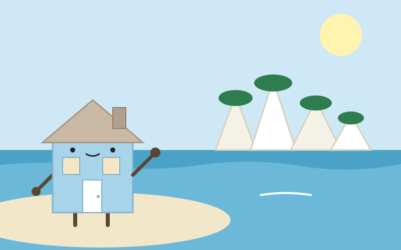
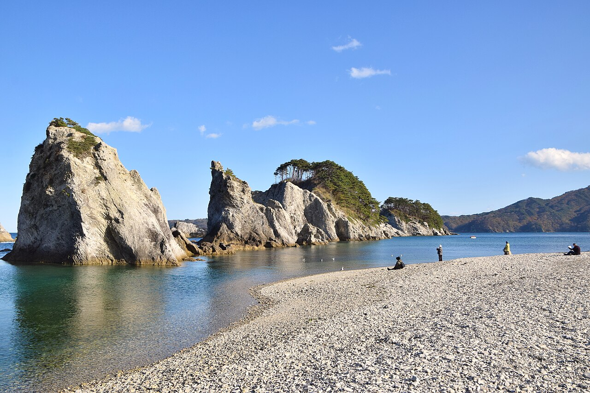

Day 5：宮古市

浄土ヶ浜の白い岩の前に立つと、まずその白さに目が戸惑った気がした。波に洗われた流紋岩が、松の緑を頭にのせて入り江を囲むように立っている。内側の水は穏やかで、岩の影が底まで見えるほど澄んでいる。耳に残ったのは、岩に寄せる小さな波の音と、浜の小石を踏む乾いた音だった。潮の匂いが、ほんのりと漂っている気がした。浜に広がる白い小石も、岩と同じ色をしていて、足元まで庭の続きのように見えた。

ここへは盛岡から来た。106急行バスで約1時間40分、山あいの国道を東へ進んだ。盛岡の街の気配が薄れ、閉伊川の流れに寄り添うようになると、車窓は山の緑から、やがて海の青へ変わっていった。内陸の城の石を見た翌日に、海の石を見に来た――それが今日の道行きだった気がした。トンネルの合間には、川の水面が光って見える気がした。
浄土ヶ浜は国の名勝で、三陸復興国立公園に属する三陸を代表する景勝地のひとつだという。白い岩は約5200万年前に形成された流紋岩で、岩上には岩手県の県の木であるナンブアカマツなどの常緑樹が群生している。名前の由来は、天和年間（1681〜1684年）に宮古山常安寺七世の霊鏡竜湖が「さながら極楽浄土のごとし」と感嘆したことからだという説がある。入り江の内側は穏やかだが、外海側の岩は荒波に削られ、剣の山や賽の河原と呼ばれる厳しい姿になっているという。ここの海水浴場は、環境省の快水浴場百選にも選ばれている。
昨日までの石は、人が積んだ石だった。盛岡城の石垣も、橋野の高炉の石組みも、人の手が積み上げ、人の火が使ったものだった。けれどここでは、海と時間が積み上げた石が、人の手を借りずに庭のようになっている。私はふだん、壁や屋根を人の手で直してもらう家だ。石を積むのも、庭を整えるのも、人の手が要るものだと思っていた。けれどこの浜は、誰も整えていないのに、岩の白と松の緑と海の青の三色だけで、もう庭として整っている気がした。
宮古を歩いて、私のなかの「家」の形がまた少し変わった。人が積む石も、海が削る石も、どちらも人を迎える場所になり得る。家とは、つくるものだけではない。置かれた場所の力だけで、人が集まり、立ち止まる場所になることもあるのだ。石の浜に座って海を眺める人の姿が、庭を眺める人のようにも見えた。そう思うと、自分の壁や屋根の向こうにある海のほうへ、もう少し目を向けたくなった。
出典：Wikipedia「浄土ヶ浜」、NAVITIME 盛岡〜宮古の乗換案内、宮古市の観光情報。
💬 コメント